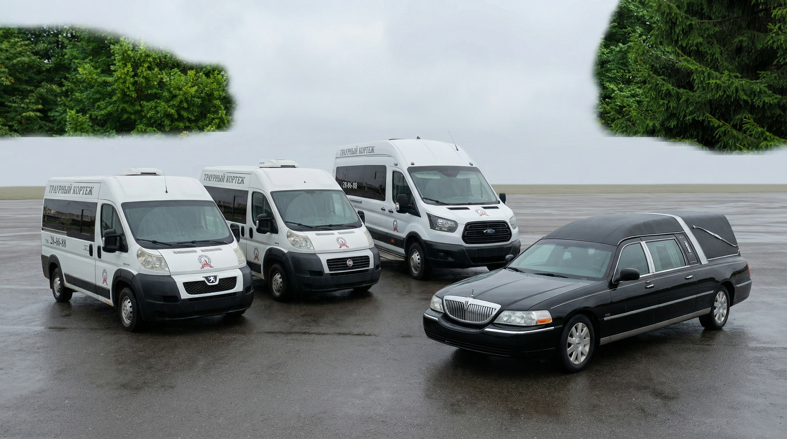
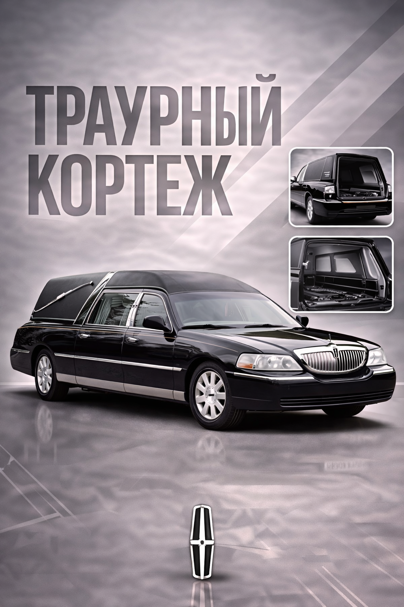
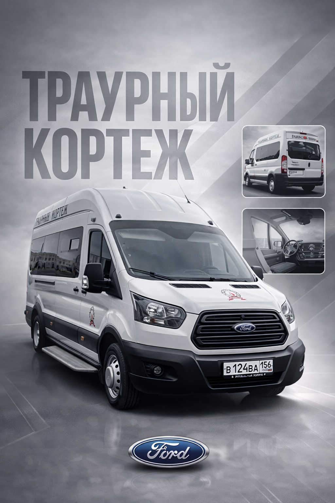
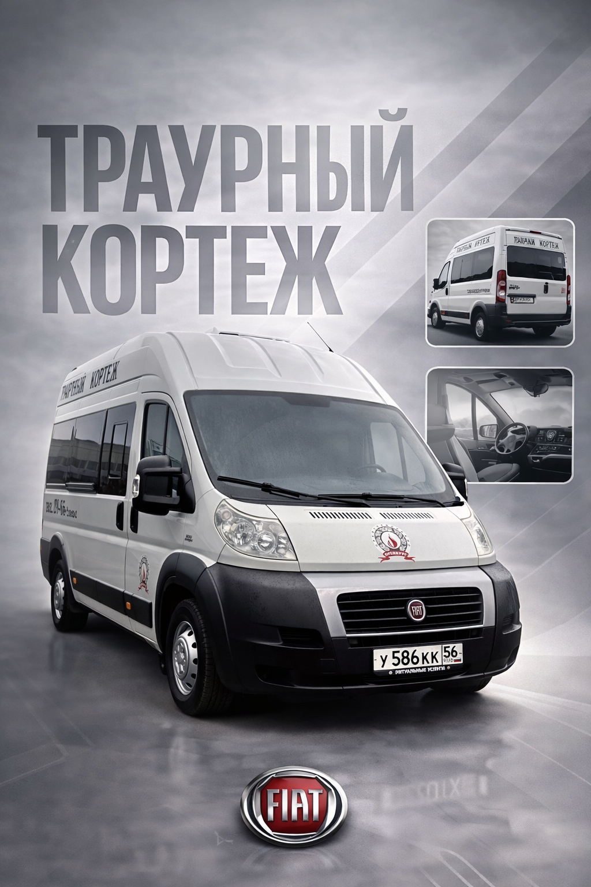
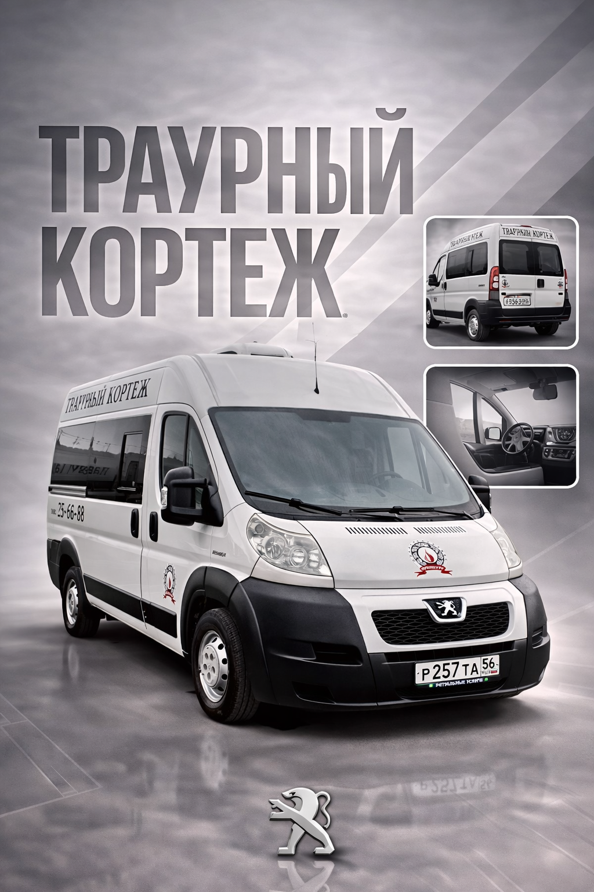

4 транспортные единицы
Сервисное сопровождение
Оренбург
Реальные фотографии автопарка, 4 транспортные единицы и спокойная корпоративная подача сервиса в составе ритуальных услуг.
Транспортное сопровождение
Организуем транспортное сопровождение в рамках ритуальных услуг, помогаем согласовать детали и подобрать подходящий формат с учётом ситуации и организационных задач.
Транспорт рассматривается как часть общей координации: он заранее включается в структуру сопровождения и помогает сохранить спокойный порядок церемонии.

В распоряжении компании
Транспорт согласуется как часть общего комплекса услуг: по времени, порядку подачи и организационным деталям. Это помогает выстроить понятный сценарий сопровождения без лишней неопределённости.
Время, порядок подачи и основные детали обсуждаются в рамках одного процесса.
Транспорт включается в общий сценарий церемонии и поддерживает организованный порядок действий.
По вопросам организации можно заранее получить консультацию и согласовать детали сопровождения.
Автопарк
Каждая позиция показана на реальной фотографии и подана как часть сервисной структуры компании — сдержанно, уважительно и без стилистики автомобильного каталога.

Более представительный формат с уважительной, спокойной визуальной подачей для церемоний, где важна сдержанная статусность без лишней демонстративности.

Используется как часть согласованного транспортного сопровождения, когда важны точность по времени и спокойная организационная логика церемонии.

Практичный формат для задач, где важны своевременная подача, понятная логистика и спокойное включение транспорта в общий сценарий сопровождения.

Дополнительная единица автопарка, позволяющая гибко выстроить сопровождение с учётом маршрута, порядка подачи и организационного сценария церемонии.
Порядок взаимодействия
Транспорт согласуется как часть общего комплекса услуг. Мы заранее обсуждаем время, формат сопровождения и организационные детали, чтобы процесс оставался понятным, спокойным и собранным.
Консультация
По вопросам организации можно заранее уточнить порядок подачи транспорта, общий формат сопровождения и то, как он будет включён в сценарий церемонии.
На первом этапе уточняются дата, время и общая логика транспортного сопровождения в составе услуги.
Определяется подходящая транспортная единица с учётом организационной задачи и общей структуры церемонии.
Транспорт рассматривается не отдельно, а как часть согласованного порядка сопровождения и общего набора услуг.
Перед исполнением можно уточнить все параметры сопровождения и получить понятные ответы по организационным вопросам.
Связаться
Расскажем о формате работы, поможем согласовать детали и объясним, как транспорт включается в общий комплекс ритуальных услуг.